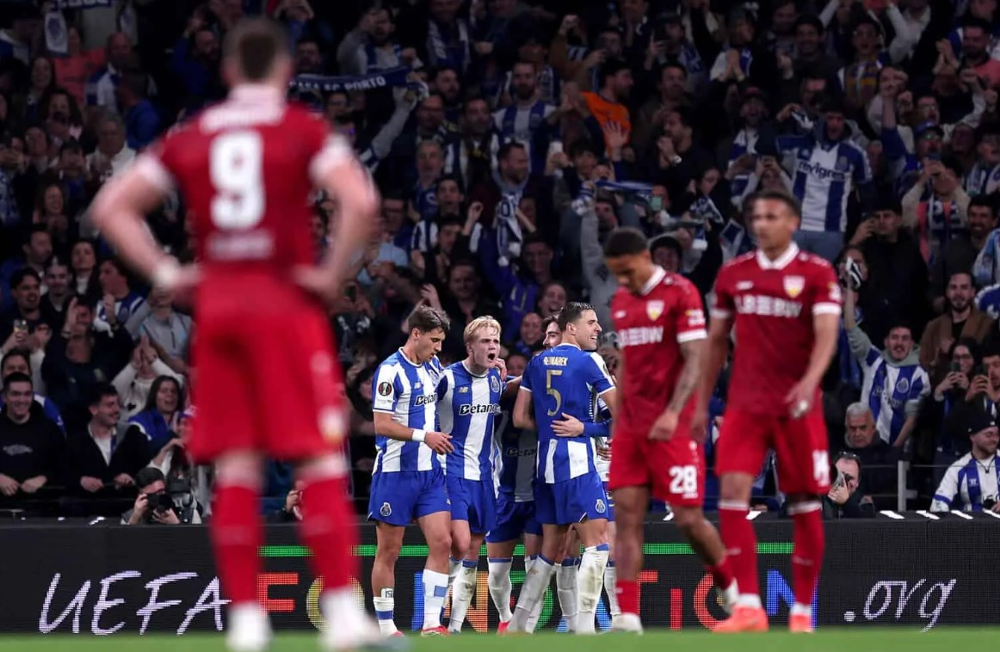

FC Porto · Saison 2025/26

EuropeEurope
À quelques jours du quart de finale aller, l'ambiance monte d'un cran. Les Dragons s'apprêtent à recevoir les Anglais avec un seul objectif : laver l'affront du match de poules.
Europa League
Score cumulé 4-1. Les Dragons ont affiché une supériorité tactique sans appel.
Focus
À 19 ans, le joyau de l'Olival affole l'Europe entière.
Championnat
Porto garde ses distances en tête de Liga Portugal.
Stats
Avec un nouveau clean sheet en Europa League, notre gardien continue d'écrire sa légende. Ses chiffres cette saison sont tout simplement délirants.